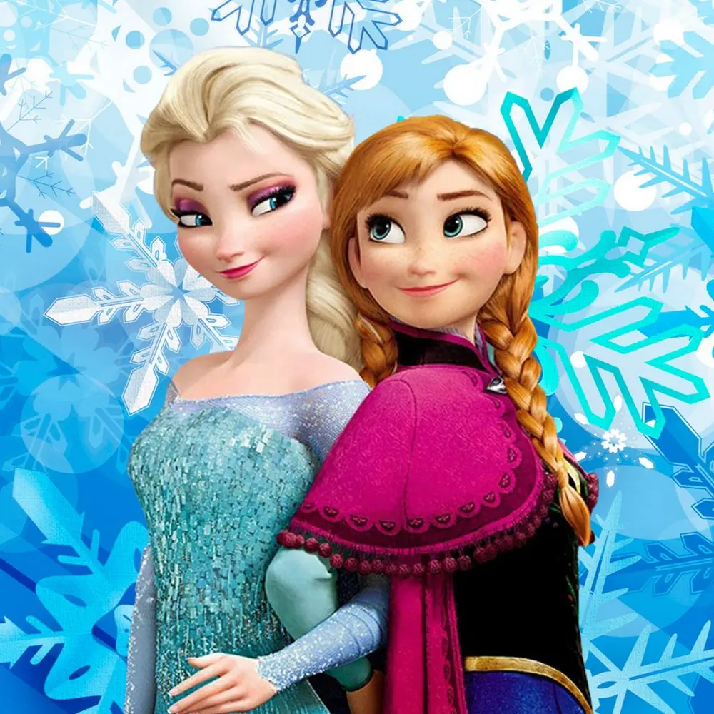

Frozen
Beh Sì, oggi voglio parlare del cartone animato della Wall Disney.
Frozen - il regno di ghiaccio.
Cioè ragazzi me ne sono innamorata.
Avendo 2 nipotine, di questo cartone ne ho sentito parlare così tanto che, in realtà inizialmente mi son detta: " vabbè è un cartone alla fine, che sarà mai!". e invece, spinta dalle piccoline a guardarlo, l'ho visto 3 giorni fa e mi è piaciuto moltissimo.
Queste due sorelle così legate e così divise per paura di farsi male. Bellissimo.
Non voglio raccontarvi la storia, magari qualcuno non l'ha ancora visto e toglierei tutta la sorpresa. Ma ve lo consiglio vivamente.
2 sorelle con un amore così grande dentro l'una per l'altra e così diverse caratterialmente.

La più grande introversa e con una dolcezza che non mostra per la paura del suo potere. La più piccola estroversa, simpatica e innamorata della vita che cerca in tutti i modi di rivivere momenti con la sorella.
Bello bello bello. Stop. Non dico più niente ahahahah
Ho già detto moltoooo.
Guardatelo.
La Disney mi ha per l'ennesima volta sorpresa. Anche se non capitava da molto.
Poi come cartone proprio è fatto bene bene. La grafica, le movenze. Le musiche poi.. Vabbè con le musiche sappiamo che la Disney non sbaglia mai.
C'è una canzone in questo cartone che mi ha proprio stregata. Cantata nel cd dall'attrice che fa Violetta ma nel film la canta Serena Autieri, che sarebbe poi colei che fa il doppiaggio di una delle due sorelle.
L'altra sorella viene invece doppiata da Serena Rossi. Altra grande sorpresa.
Poi vabbè io sono di parte poiché sono dnn tr.ame napoletane e quindi non posso non essere d'accordo con queste scelte ahahah (cuore napoletano che volete farci :P ).
La canzone é questa:
https://m.youtube.com/watch?v=vaZYGX6BimI
Insomma guardo questo cartone in continuazione e non mi stanco mai ahahahah
Applausi alla Disney :D